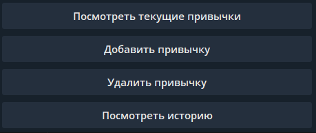

usage_guide
Начните диалог командой /start (если не запустился автоматически)
Меню бота выглядит следующим образом (для русской и английской версий)

Чтобы добавить привычку нажмите на кнопку: «Добавить привычку»

Далее следуйте инструкциям:
введите название привычки
введите описание привычки
Чтобы посмотреть список активных привычек выберите пункт «Посмотреть текущие привычки»

Окно с текущими активными привычками будет выглядеть так:

В назначенное время привычки (немного ранее) Вам придет оповещение о ней. Вы можете указать, выполнено действие привычки или нет.

Также можно удалить определенную привычку. Для этого выберите соответствующий пункт в меню бота. И введите номер привычки, который необходимо удалить.

Вы можете посмотреть историю привычек, выбрав пункт «Посмотреть историю»